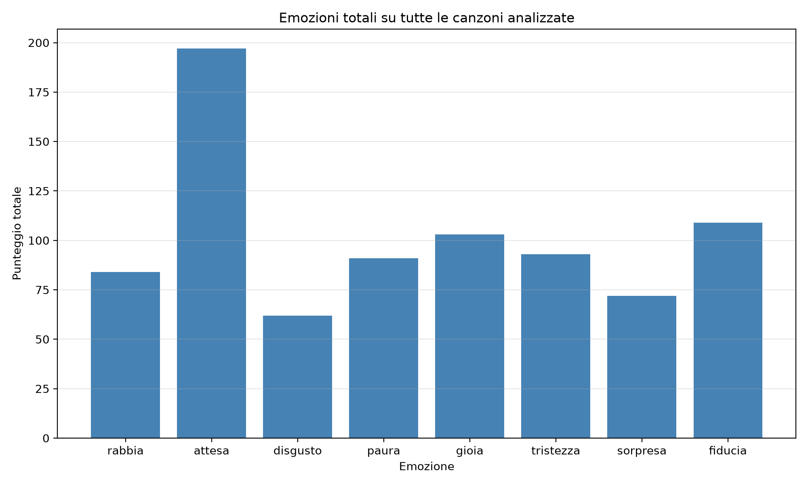
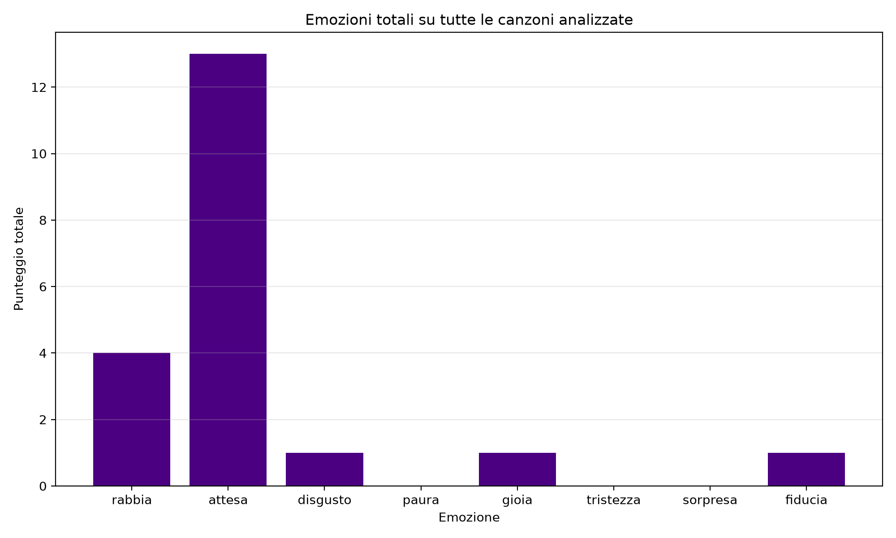
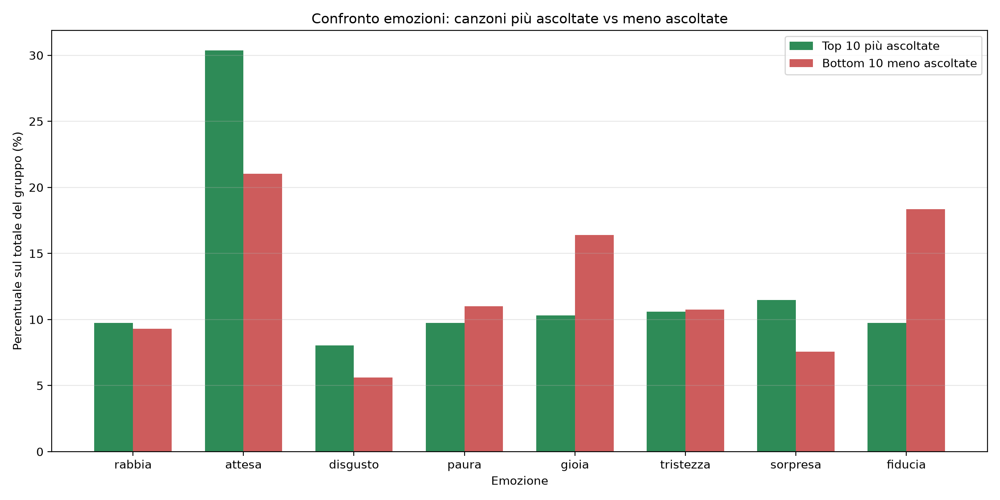
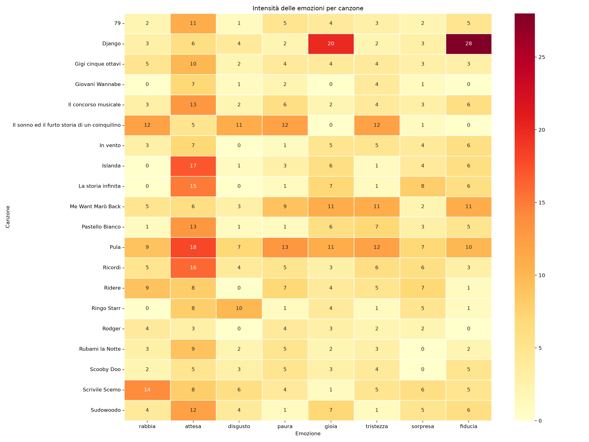
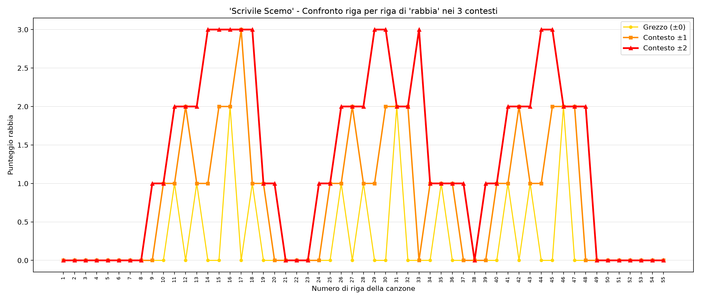
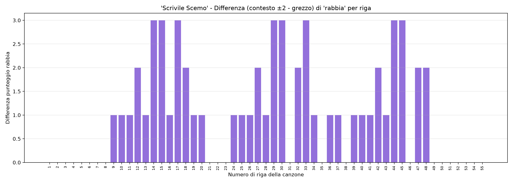
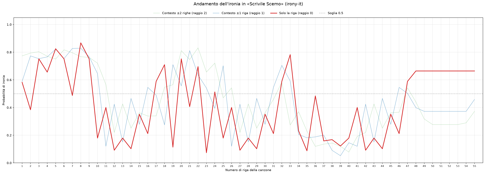
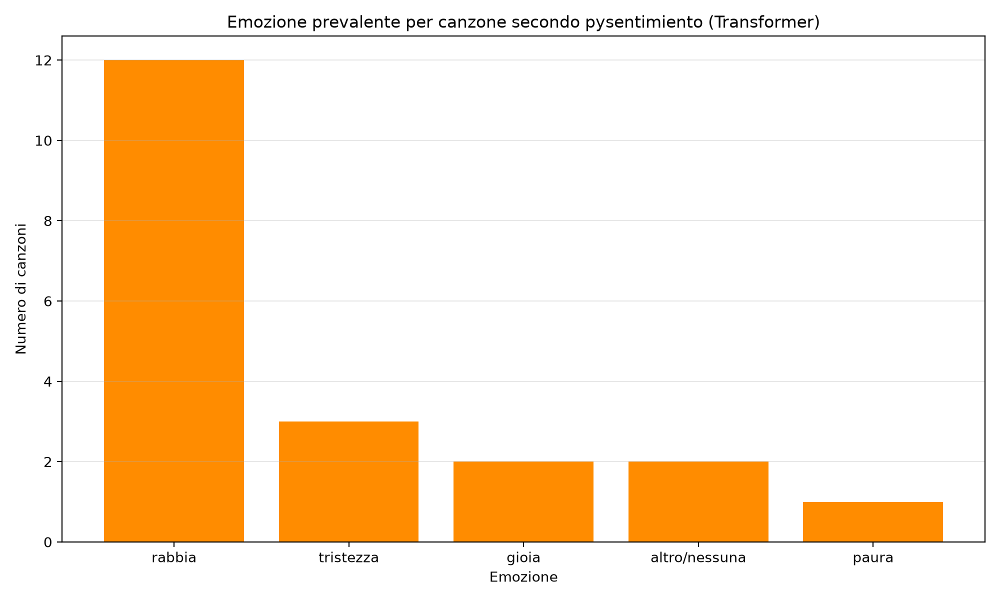

Pinguini Tattici Nucleari: i grafici dell'analisi
Raccolta dei grafici del progetto sulle emozioni nei testi di 20 canzoni (le 10 più ascoltate e le 10 meno ascoltate su Spotify), ognuno con una spiegazione di cosa mostra e di come leggerlo.
Metodo, risultati e limiti sono nel README del progetto su GitHub.
1. Emozioni totali nel corpus
Grafico a barre · lessico NRC

Cosa mostra
La somma di tutti i punti di ciascuna delle 8 emozioni su tutte le 20 canzoni, comprese le emozioni che in una canzone non sono la prevalente. Esempio: una canzone con 12 punti di rabbia e 4 di fiducia contribuisce con 12 punti alla rabbia e con 4 alla fiducia.
Come leggerlo
Più alta è la barra, più quell'emozione pesa nel complesso dei testi analizzati.
2. Emozione prevalente per canzone
Grafico a barre · lessico NRC

Cosa mostra
Quante canzoni hanno una certa emozione come prevalente, cioè quella con il punteggio più alto. Ogni canzone conta 1 sull'emozione vincente: nell'esempio di prima, la canzone con 12 punti di rabbia e 4 di fiducia aggiunge 1 alla rabbia e niente alla fiducia.
Cosa si osserva
L'emozione prevalente è attesa in 13 canzoni su 20, rabbia in 4, mentre gioia, fiducia e disgusto compaiono una volta ciascuna.
Differenza con il grafico 1
Qui conta soltanto l'emozione che vince in ogni canzone, nel grafico 1 contano tutti i punti. Un'emozione può essere alta nel grafico 1 senza essere quasi mai la prevalente.
3. Più ascoltate contro meno ascoltate
Barre affiancate · lessico NRC · valori in percentuale

Cosa mostra
Per ognuna delle 8 emozioni, due barre: il suo peso percentuale nelle 10 canzoni più ascoltate e nelle 10 meno ascoltate.
Perché le percentuali
I due gruppi possono avere quantità di testo molto diverse. Con i valori grezzi il gruppo con più testo sembrerebbe «più emotivo» solo per la lunghezza; la percentuale sul totale del gruppo toglie questo effetto.
Come leggerlo
Se le due barre di un'emozione sono simili, i gruppi hanno lo stesso profilo emotivo per quell'emozione; se sono molto diverse, quell'emozione distingue i due gruppi.
4. Mappa di calore canzoni × emozioni
Mappa di calore · lessico NRC

Cosa mostra
Una tabella colorata: ogni riga è una canzone, ogni colonna è un'emozione, e il colore di ogni casella indica quanto quell'emozione pesa in quella canzone.
Come leggerlo
Serve a vedere in un colpo d'occhio tutto il corpus: le colonne con molte caselle intense sono emozioni diffuse, le righe con una sola casella molto intensa sono canzoni dominate da una sola emozione.
5. Caso studio «Scrivile Scemo» (fase 3.1)
Sei grafici sulla canzone con emozione prevalente rabbia
Perché questo caso studio
Alcuni versi ricevono un punteggio alto di rabbia, paura o tristezza dal lessico NRC, ma nella canzone il linguaggio è iperbolico: il metodo conta le parole e non coglie ironia o figure retoriche. Per verificare quanto pesa questo limite, la canzone è stata analizzata in tre modi: ogni riga da sola, con le righe vicine (±1 e ±2), e con un modello Transformer per l'ironia.
Come leggere l'asse orizzontale
In tutti i grafici sull'asse orizzontale c'è il numero di riga della canzone, non il testo, che è protetto da copyright. I numeri sono gli stessi in tutti i grafici, quindi permettono di confrontare lo stesso punto della canzone tra un grafico e l'altro. Possono avere qualche salto, perché le righe vuote tra le strofe sono contate nella numerazione.
Scrivile Scemo: andamento delle emozioni, senza contesto
Grafico a linee · lessico NRC · ogni riga da sola

Cosa mostra
Le 4 emozioni con il totale più alto nella canzone, riga per riga. La linea spessa è l'emozione prevalente (rabbia); le altre tre hanno marcatori diversi per restare visibili anche quando si sovrappongono. Il punteggio di ogni riga è calcolato sulle sole parole di quella riga.
Come leggerlo
Un picco indica una riga con molte parole associate a quell'emozione. È il punto di partenza: i grafici seguenti mostrano cosa cambia aggiungendo il contesto.
Scrivile Scemo: andamento delle emozioni, contesto ±1 riga
Grafico a linee · lessico NRC · riga più la precedente e la successiva

Cosa mostra
Lo stesso grafico di prima, ma il punteggio di ogni riga include anche le parole della riga precedente e di quella successiva (finestra di contesto di raggio 1).
Come leggerlo
Confrontalo con il grafico senza contesto: le linee diventano più «morbide», perché ogni riga condivide parole con le vicine, e alcune righe senza parole emotive ricevono punteggio dal contesto.
Scrivile Scemo: andamento delle emozioni, contesto ±2 righe
Grafico a linee · lessico NRC · finestra di due righe per lato

Cosa mostra
Come i due grafici precedenti, con una finestra più ampia: ogni riga include le parole delle due righe che la precedono e delle due che la seguono (raggio 2).
Come leggerlo
Più la finestra si allarga, più i punteggi si «spalmano» su più testo e le differenze tra una riga e l'altra si attenuano. L'emozione prevalente della canzone resta la rabbia in tutte e tre le versioni.
Scrivile Scemo: confronto della rabbia tra le tre versioni
Grafico a linee · rabbia · riga sola, ±1 e ±2

Cosa mostra
Il punteggio di rabbia riga per riga, con le tre versioni sovrapposte: riga da sola, contesto ±1 e contesto ±2.
Come leggerlo
Dove le tre linee coincidono, il contesto cambia poco il giudizio su quella riga; dove si allontanano, il punteggio dipende molto dalle righe vicine.
Cosa si osserva
Il contesto cambia la distribuzione della rabbia: alcune righe che da sole avevano punteggio 0 arrivano a 3 includendo le righe vicine, ma l'emozione prevalente della canzone non cambia.
Scrivile Scemo: differenza della rabbia, contesto meno riga sola
Grafico a barre · rabbia · contesto ±2 meno punteggio grezzo

Cosa mostra
Per ogni riga, di quanto cambia il punteggio di rabbia passando dalla riga da sola al contesto ±2: la barra è il punteggio con contesto meno il punteggio grezzo.
Come leggerlo
Le barre più alte indicano le righe su cui il contesto incide di più. Una barra vicina a zero significa che il contesto non cambia il giudizio su quella riga.
Scrivile Scemo: andamento dell'ironia
Grafico a linee · modello Transformer irony-it · probabilità da 0 a 1

Cosa mostra
La probabilità che ogni riga sia ironica secondo un modello Transformer per l'italiano (aequa-tech/irony-it), con tre linee: riga da sola, contesto ±1 e contesto ±2. La linea tratteggiata è la soglia 0,5.
Come leggerlo
Una linea sopra 0,5 indica che il modello considera quel punto più probabilmente ironico che non ironico. Se le tre linee sono vicine, il contesto cambia poco il giudizio; se si allontanano, il giudizio dipende dalle righe vicine.
Cosa si osserva
Ci sono alcuni picchi di ironia, soprattutto nella prima parte della canzone. Il verso che il lessico segnala con punteggi alti di rabbia, paura e tristezza non risulta tra quelli ironici secondo il modello.
6. Confronto con il modello Transformer
Modello pysentimiento · testo dell'intera canzone

Cosa mostra
Le emozioni stimate con un modello Transformer già addestrato, applicato al testo dell'intera canzone e non riga per riga. La rabbia risulta l'emozione prevalente nelle canzoni analizzate, in 12 canzoni su 20.
Come leggerlo
Il modello conosce 6 emozioni (rabbia, disgusto, paura, gioia, tristezza, sorpresa) più una categoria residua; non ha né attesa né fiducia. Per questo il confronto con il lessico NRC è possibile solo sulle emozioni in comune.
7. Grafico interattivo: anno, ascolti ed emozione
Grafico interattivo · una canzone per pallino
Apri il grafico a schermo intero →Cosa mostra
Ogni pallino è una canzone: l'asse orizzontale è l'anno di uscita (compresi gli anni senza canzoni), l'asse verticale sono gli ascolti Spotify e il colore indica l'emozione prevalente.
Come usarlo
Passa il mouse su un pallino (o toccalo, da telefono) per vedere titolo, emozione, anno e ascolti esatti. Trascina un rettangolo per zoomare, fai doppio clic per tornare alla vista iniziale, clicca un'emozione nella legenda per nasconderla o mostrarla.
Come leggere la scala
L'asse verticale è logaritmico: ogni tacca moltiplica invece di sommare. Salire da 1 a 2 milioni occupa lo stesso spazio che da 100 a 200 milioni, perché in entrambi i casi gli ascolti raddoppiano. La distanza tra due pallini indica quante volte uno è più ascoltato dell'altro (Ridere ha circa 128 volte gli ascolti di Pula), non la differenza assoluta.
Cosa si osserva
L'anno di uscita separa nettamente i due gruppi: le 10 più ascoltate sono uscite tra il 2020 e il 2024, le 10 meno ascoltate tra il 2014 e il 2017. L'emozione prevalente, invece, non distingue i due gruppi.